Project Overview
Public Relations Manager – Youngtrepreneurs Directing & Cinematography Workshop Accra, Ghana | 2019
As the Public Relations Manager for the Youngtrepreneurs Directing & Cinematography Workshop, I played a key role in shaping the public image and media engagement of this impactful initiative led by Scilla Owusu. This three-day workshop, designed to equip aspiring filmmakers with hands-on industry knowledge, brought together established professionals and emerging creatives to bridge the skills gap in Ghana’s film industry.
Workshop Highlights
I spearheaded comprehensive PR campaigns, leading the planning and execution of public relations strategies for the organization’s inaugural directing and cinematography workshop. This successfully enhanced public visibility and engagement, resulting in a significant increase in attendance and participation. I secured high-profile interviews for the Founder and CEO, Priscilla Owusu, with prestigious media outlets including BBC, Metro TV, Hitz FM, YFM, and Live FM, contributing to a remarkable surge in media coverage and elevating the organization’s brand presence across Ghana. Additionally, I crafted compelling and engaging stories to showcase the organization’s initiatives, pitching them to high-traffic digital platforms such as AmeyawDebrah.com, Africa 2.0 Magazine, gbafrica.net, and Pulse.com.gh, driving a fair growth in online presence and expanding the organization’s reach to a broader audience. My efforts played a pivotal role in the success of the workshop by coordinating PR activities, managing media relations, and ensuring seamless communication between stakeholders. Through strategic storytelling, consistent messaging, and media engagement, I enhanced the organization’s public image, positioning Youngtrepreneurs as a leading voice in youth empowerment and creative arts in Ghana.
Watch the Video
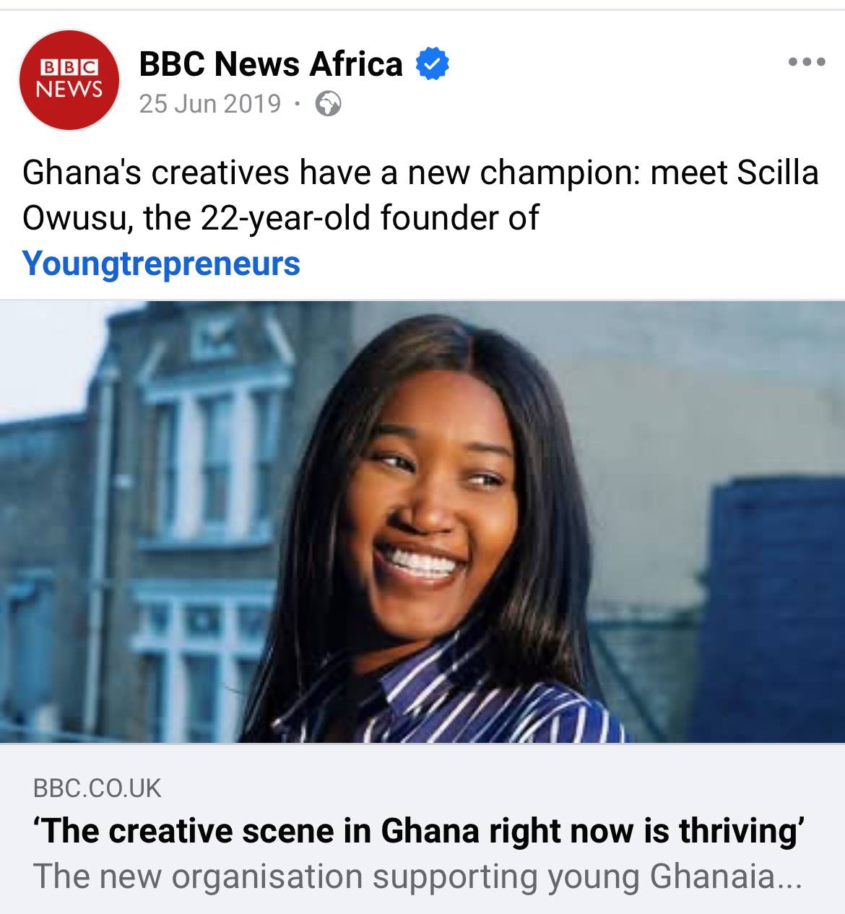Project Gallery
 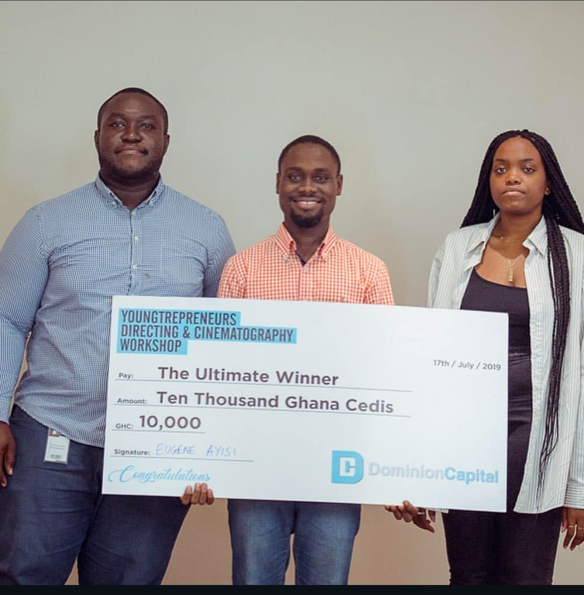
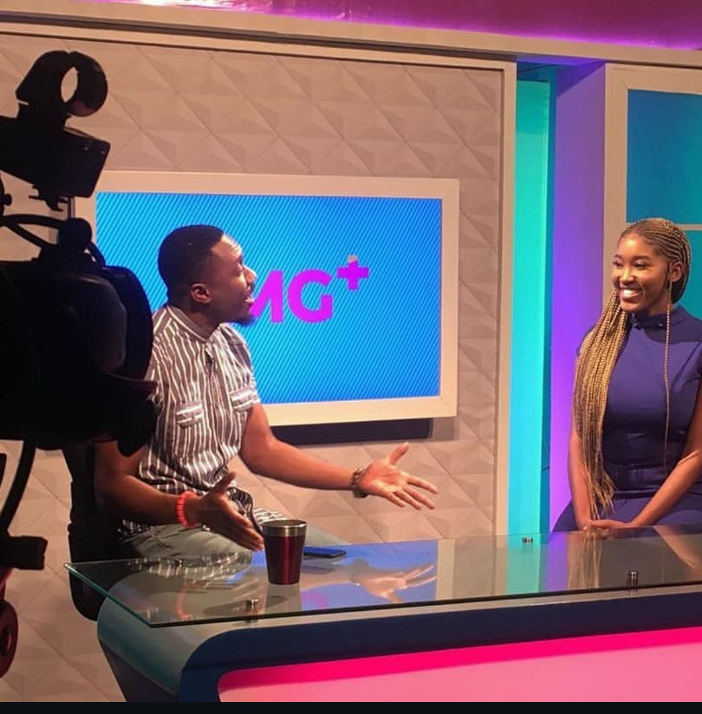
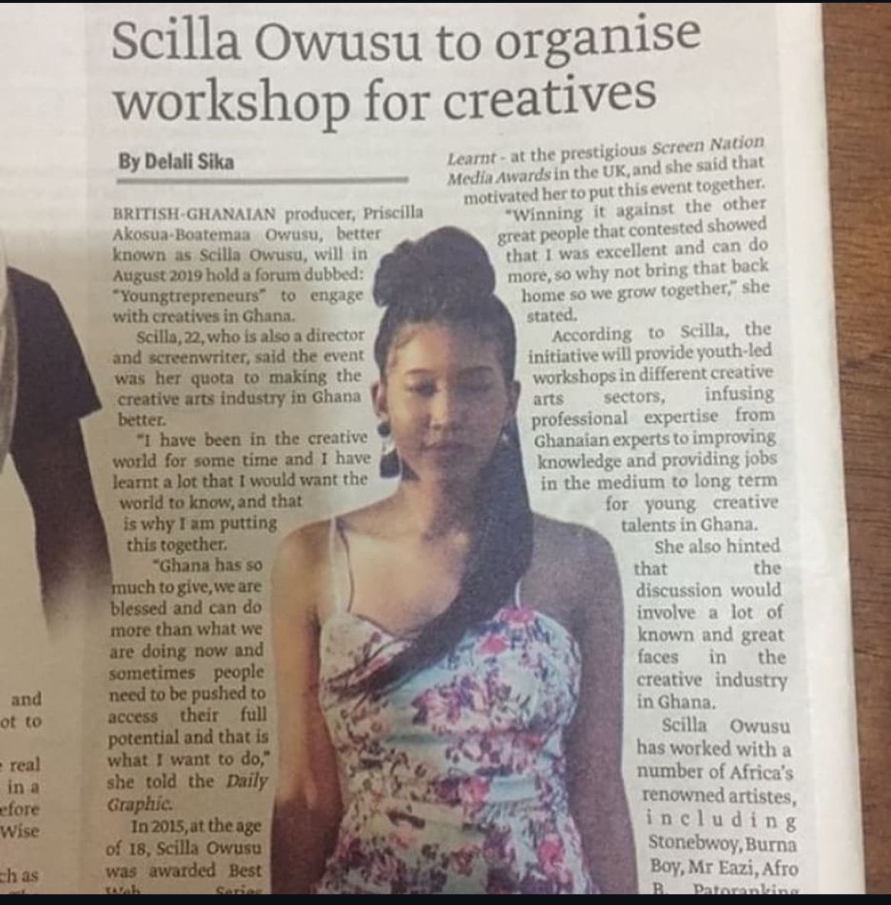
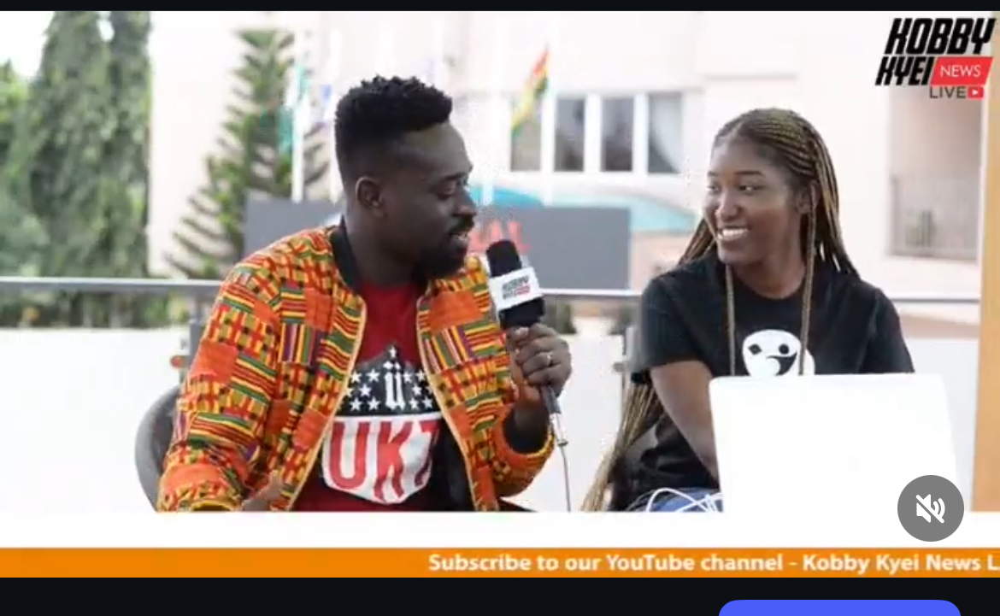
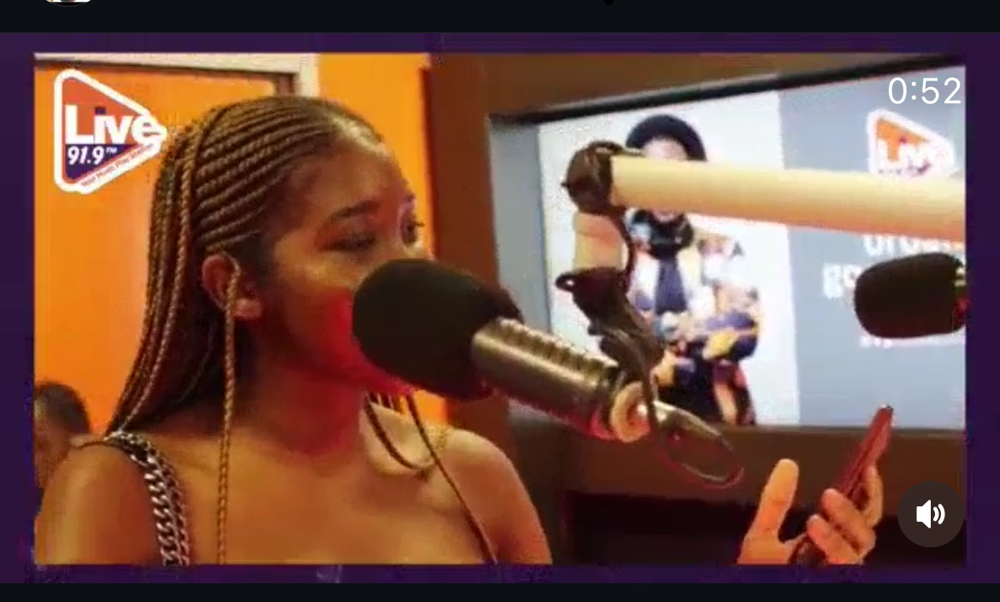
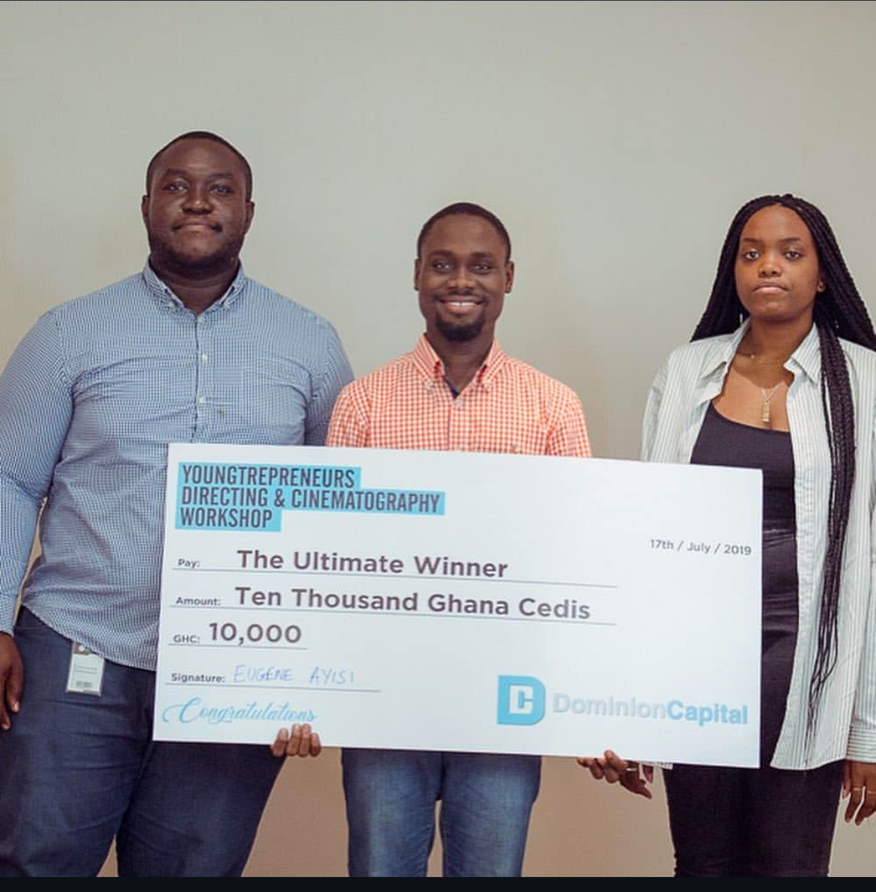
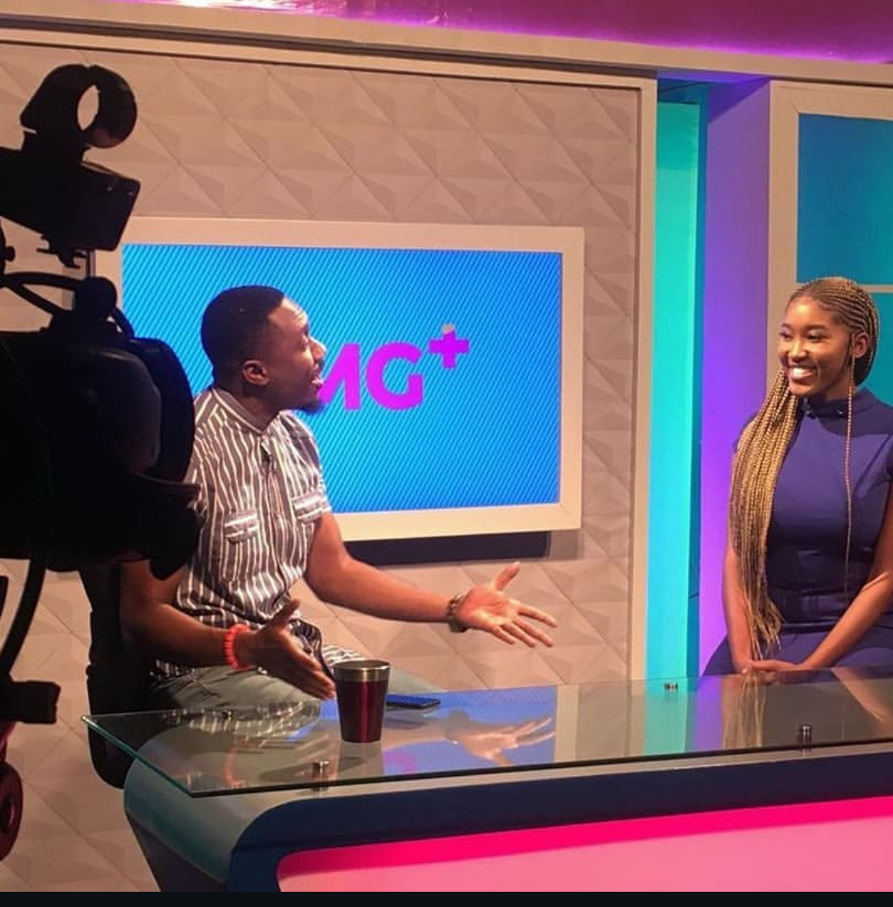
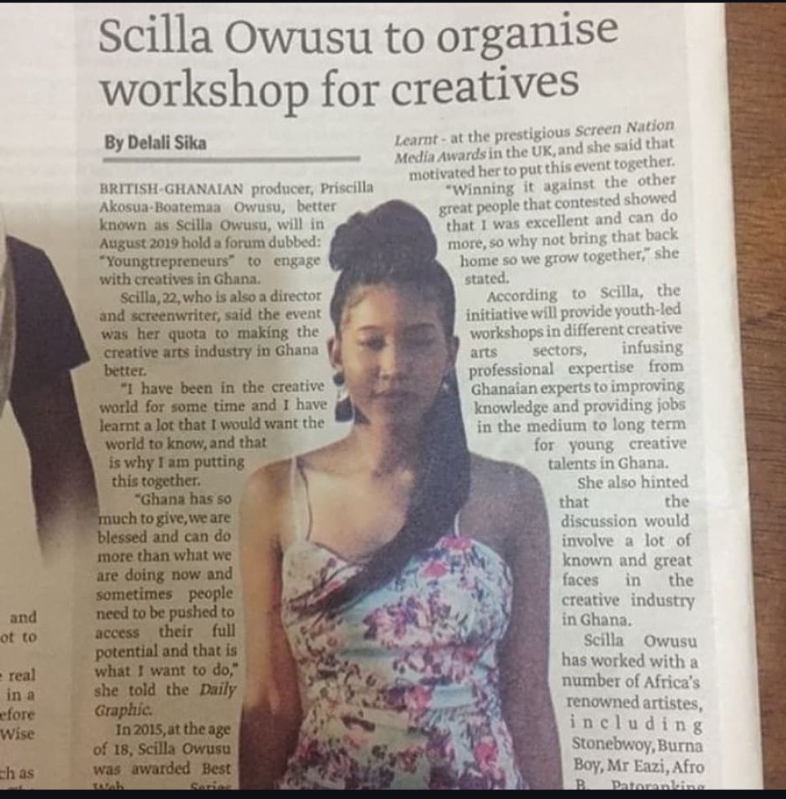
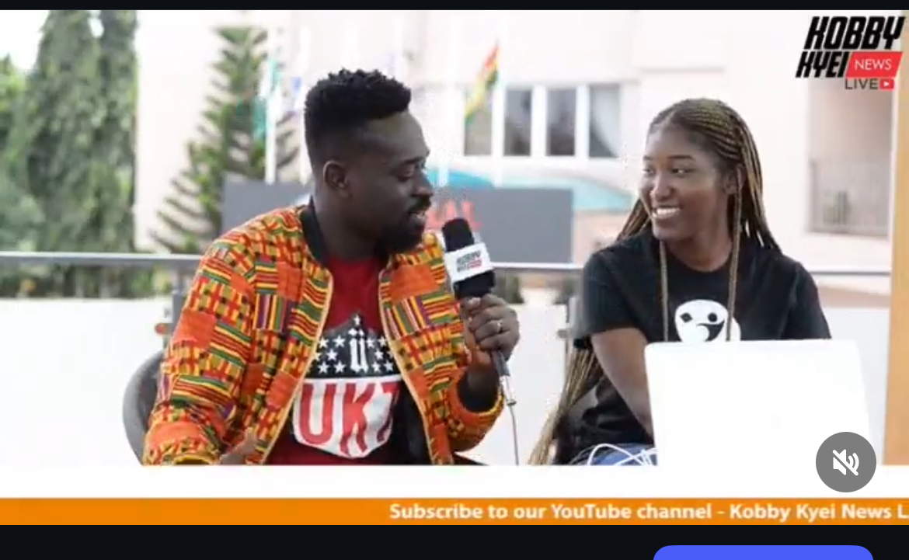
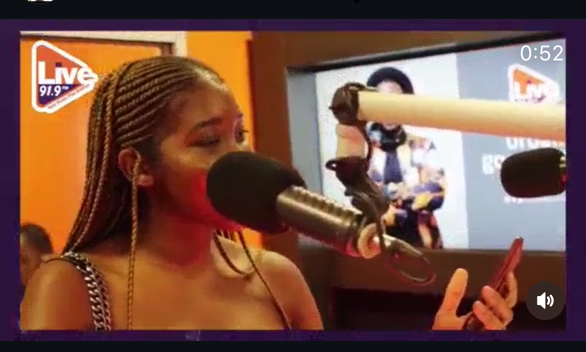